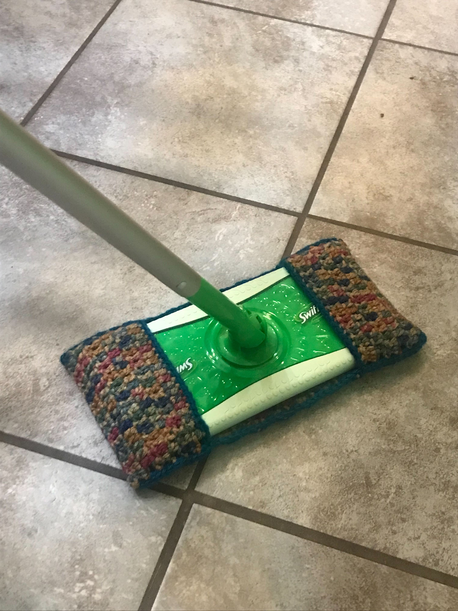

The Towel Holder is much more convenient then crocheting right onto a towel because
this way you can switch out your towels rather than crocheting onto twenty different
towels.

Materials: 2 Yarn colors: Blue and White,
Crochet Hook, Scissors, Lardge Sewing Needle.
Notes: The ring I used is about six inches in diameter and I also used quite a large button which
I sewed on loosely so that the loop made out of CHs fit nicely underneath it. Also since I changed
colors every round there is no CH at the start of each RND, the next RND is just attatched to the last
stitch.
Please do not copy this pattern, sell this pattern, or call it your own. You can make it yourself and sell it
or reference the website. If you have any questions, please feel free to contact me.